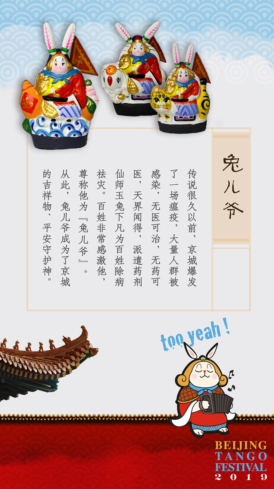

BTF吉祥物“兔儿爷”

本届探戈节，我们请来了一尊“兔儿爷”作为吉祥物。
首先，“兔儿爷”是最具北京特色的老北京的“玩意儿”。其历史记载可以追述到大约350年前的明朝末年。
传说有一年，北京城爆发了一场奇怪的瘟疫，众多医师束手无策，无方可治。上天怜悯苍生，派遣月宫中的玉兔前往人间消灾解难。
玉兔化身白衣郎中，来到人间。但是百姓忌讳他的一身白衣，不愿开门接纳。于是玉兔借助寺庙中供奉的神像铠甲，以武将形象出现，百姓认为是神仙下凡，纷纷开门迎接。
玉兔挨家挨户奔走，率领凡间各种动物，治好了人间的疾患，消除了京城内外的瘟疫后，返回天界。
北京城的百姓为感谢玉兔的恩德，就请能工巧匠用泥塑彩绘，做成玉兔的模样供奉起来。尊称为“兔儿爷”。
从此，兔儿爷成为了北京的吉祥物、平安的保护神。每年春节庙会、中秋节，百姓都会请回一尊“兔儿爷”供奉，为全家的平安祈福。
兔儿爷的制作工艺也得到传承，被认定为北京的非物质文化遗产。
其次“兔爷”的中文发音也合了我们“too yeah”发音，代表胜利、开心、加油、很棒、欢乐、自拍剪刀手……等各种积极可爱的能量。
也是我们希望北京探戈节能带给大家各种美好体验的初衷！